LL Ring ： Lightweight Language Ring 観戦レポート
書いた人：重富巧彦
はじめに
今年も恒例の Lightweight Language の祭典が開催されました。 今年のイベント・タイトルは、「LL Ring」と銘打たれ、 新木場 1st Ring という、まさに “闘いの場” を舞台に、 LL 祭典史上最多の各言語があつい闘いをくりひろげました。 観覧者の総人数は、だいたい 200 人くらいだったでしょうか。
新木場 1st Ring は、日頃はプロレスのイベントなどを開催している、 まさに「リング」つまり「闘技場」でありまして、 司会者の弁によれば、このような会場でプログラミング言語の イベントをやるなど、これがきっと最初で最後だ、とのこと。 そりゃそうでしょうねぇ。
イベントは 1 日だけでしたが、朝 10:30 から夜 21:20 までの長丁場でした。 また、場内での飲食も自由で、夕食休憩後には会場内での飲酒も可というリベラルぶり。 まさにこの会場ゆえのことでしょうが、 昨年の LLDN の場内飲食一切禁止とはうってかわって、 観覧者にヤサシイ計らいになっておりました。いつもこうだといいんだけどな。
このイベントの各種情報は、LL Ring 公式サイトや 各種ブログや動画配信サイトにて公開されております。 ですので、ここではやや Ruby に力点を置き、 やや Ruby びいきな私見を交えたレポートを書かせていただきます。
なお、今回のイベントでは、日本Rubyの会の高橋会長は LL Ring スタッフとして大活躍していました。
資料
当日の発表資料の多く (残念ながら、全部ではない) は、 公式サイトのダウンロードページ に置かれています。
また、映像のストリーミングも公開されています (ソフトバンク ビジネス+IT：【ストリーミング】 Lightweight Language Ring（LLRing） −Blood Sweat & Code[1/3：Language Update]/ビジネスインパクト)。
ぜひ閲覧してみてください。
当日の様子
 入場開始前の会場。朝もはよから、みんな LL が好きなのね。
入場開始前の会場。朝もはよから、みんな LL が好きなのね。
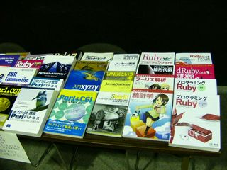 LL 関連書籍展示コーナー。 発売されたばかりのピッケル本も並んでいます。
展示されていた書籍は、イベントの最後で観覧者へのプレゼントになりました。 ピッケル本が当たった人がうらやましい。
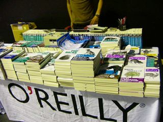 恒例の LL 関連書籍販売コーナー。
LL* では、10%OFF で買うことができます。
Language Update
Language Update は、各 LL の最新動向を報告する、毎年の恒例のプレゼンテーションです。 LL イベント開催以来、発表される言語の数は徐々に増えてきたのですが、 今年はなんと 14 もの言語がエントリされていました。 ともすれば単調な報告になりがちなこのセッション、決して退屈しません。 さまざまなトラブルが発生するのを傍観するのもまた楽しいものでありますし、 プレゼンテータの趣向を凝らしたパフォーマンスも見所。 また、観覧者に対してプレゼンテーションの順序が隠されており、 リング・アナウンサ (司会の法林さん) のコールによって各言語の プレゼンテータがリングに入場してくるという嗜好。 発表者の多さを逆手に取ったうまいやりかただと思いました。 下記に、実際のプレゼンの順序を書いておきます。
- Haskell
- Scheme - ハワイからの生中継リモートプレゼン
- awk - PC がリブートする事故発生。あわてふためくプレゼンテータ
- OCaml - プレゼンテータが……呼吸困難のラクダ
- Lisp - 中村昭三郎さんがプレゼン
- Scripting for Java Platform - ウクレレ漫談風プレセン。マイク係がラクダ
- PHP
- Perl - 小飼弾さん○要説が飛び出す。アブナイ
- JavaScript - PC のバッテリ切れ発生
- Python
- Ruby - 唯一の言語開発者自身 (matz) によるプレゼン。でも引退宣言が……
- ActionScript
- FORTH - はるばる熊本から
- Squeak - タッグ (二人) でプレゼン
各プレセンテータに与えられた時間は 8 分きっかりで、 なんだかライトニング・トークっぽい発表が多かったように思いました。
個人的に印象に残った発表について、いくつかかいつまんで振り返ってみますね。 全部の発表について書けない点については、ご了承ください。 あと、まちがってたり、嘘書いてたりした場合には、ご指摘ください。
Scripting for Java Platform
硬い Java の世界にじわじわと浸透しつつある柔らかい LL。 全部を Java で書くのではなく、Java で書くべきところは Java で書いて、 Java で書きにくいところは LL で書いて、柔軟に開発しようって感じの話。 「近い将来、JVM はスクリプト言語実行エンジン化してゆくかもしれない」 という予想は興味深かったです。
Python
ちゃくちゃくとマイクロソフトとの絆を強めつつある。 Google で Python がバリバリ使われてるよって話よりも、 自分は IronPython (Python.NET – P# なのか？)1 が気になってしょうがない。 「みんなの Python」こっそり買いました。
Squeak
アラン・ケイ自身が「Smalltalk は死んだ言語だ」とのたまわったらしい。ショックです。 とはいえ Squeak コミュニティは健在で、近々 3.9 版が出るらしい。 3D の仮想世界のデモは圧巻でした。 仮想世界の中のアバターのウサギ君が、その世界の中にクラス・ブラウザを立ち上げて、 それを使ってプログラミングする様には、会場中が感動しておりました。
PHP
5.x 系が落ち着いたら勉強始めようかなと思っていたら、もうじき 6.0 が出るんですね。 すごいですね、メジャー番号がどんどん上がっていきますね。
FORTH
なんだかよくわかりませんでしたが、見方 (主観) によっては LL なんだそうです。 最後の数秒の「スタートレック情報」だけ、よくわかりました。 劇場版第 11 作は、再来年なんですね。
Ruby
実は、写真撮影に奔走していて、よく聴いていませんでした。 が、なんでも、まつもとさんは Ruby から引退するらしい!! というジョークをとばしていました。 なんだジョークなの？と思いきや、1.8 系から足を洗いたいのは本音らしいです。 この LL Ring 開催に合わせて 1.8.5 をリリースしたのだそうです。 そしたら、その日は (案の定) サーバが悲鳴を上げて大混雑だったそうです。
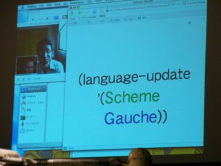 ハワイから生中継中の、Gauche のプレゼン。 プレゼンテータは、川合史朗さん。
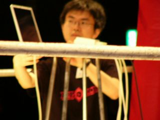 プレゼン補助に奮闘する高橋会長。 ピントが合ってなくてスミマセン。
 OCaml をプレゼンすべく入場してきたラクダ。
OCaml をプレゼンすべく入場してきたラクダ。
 マイクをくわえてゼィゼィと息苦しそうに OCaml をプレゼンするラクダ。
マイクをくわえてゼィゼィと息苦しそうに OCaml をプレゼンするラクダ。
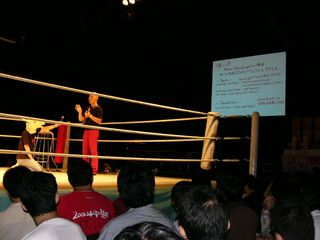 偶蹄目の哺乳動物の介助を受けつつ、ウクレレ漫談調のプレゼンをする霊長類 (人間)。
 Ruby 1.8.5 のリリースを発表するまつもとゆきひろさん (matz)。
Ruby 1.8.5 のリリースを発表するまつもとゆきひろさん (matz)。
 RubyKaigi2006 に言及するまつもとゆきひろさん (matz)。
RubyKaigi2006 に言及するまつもとゆきひろさん (matz)。
 Ruby の未来を語るまつもとゆきひろさん (matz)。
Ruby の未来を語るまつもとゆきひろさん (matz)。
LL で関数型プログラミング
関数型プログラミングを、LL の視点から語ろうという趣旨のパネルディスカッションだと お見受けいたしました。 自分は、関数型プログラミングについては全くの素人なので、このセッションを必要十分に 解説する技量を持っておりません。あしからず。 そんな自分にとって印象に残ったことを書いておきます。
 パネラーのみなさん。
—-
パネラーのみなさん。
—-
パネラーは、みなさん (どうやら) 関数型言語 (Lisp, ML, Haskell, Scheme, etc…) を第一言語として 使っていらっしゃる方々のようですが、唯一、青木峰郎さん＠日本 Ruby の会だけは、 第一言語が Ruby。なぜこのパネラー席に座しておられるかというと、もちろん 「ふつうの Haskell プログラミング」の著者であらせられるからです。 で、青木峰郎さんから、今回は「Haskell に肩入れする方針で臨む」との所信表明がございました。
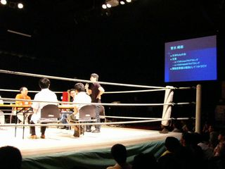 自己紹介をされる青木峰郎さん。 —-
大まかなディスカッションの進行は、下記のようなかんじでした。
まず、「関数型言語」の定義。
次に、関数型言語の持つ大きな特徴：「高階関数」「型付け」 「宣言的記述」「遅延評価」について、個別に議論。
そんでもって、会場の観覧者との Q&A タイム。
関数型言語の定義
パネラーが順に自分なりの関数型言語の定義を語ってくださいました。
「高階関数があればよし」
「カッコ ‘(‘ とコッカ ‘)’ があればよし」(Lisper)
「社会的に「関数型」と認められていればそれでいいんでない？」(青木さん)
「冥王星と同程度にあいまいで、どうでもよいことだ。副作用がなさげなら、いいんでない？」
関数型言語屋さんは「副作用」という言葉にはややヒステリックに反応されるみたいですね。
「副作用は、ダメだよね、有っちゃ」
「モナドな副作用じゃない! 副作用を表現できちゃうけどね」
など、副作用談義がしばらく続きました。自分にはなんのことやら。
高階関数
Ruby のイテレータは高階関数だ。 それよりなにより、いまどきの言語にイテレータを備えないことの方がまちがってる、 という意見が印象に残っています。
型付け
きちんと型を書くのか、書かずに済ませるのかで、小競り合いがあったように思います。
「型を書くのもプログラミングの一部なのだ」
「いや、記述量が増えるじゃないですか。LL っぽくないです」
型を書かない派のパネラーの論拠として、 プログラムの最終形を強くイメージすることなくコードを書き進める、という利点が 述べられていました。 型を書かない場合も、型を考えなくてもよいわけではなく、 コードを書き進めながら型を考えることがプログラム全体の設計につながっていくんだと いうようなことを述べられていました。 個人的な感想として、このあたりの考え方は、関数型言語特有のものではないように思えました。 たとえば、プログラムの設計〜コーディングに際して、C++, Java と Ruby, Smalltalk では おのずとアプローチの仕方が異なるわけで、それと似たような話だと感じました。
宣言的記述
宣言的記述では、実行の順序を指定できません。w(なのだそうです)
この制限に対して、「関数型言語では、実行順序を気にするべきではないのだ」 「いやそれは困るよ。たとえはファイルを Open して Read して Close するのは、この順序じゃないとダメでしょ」
などといった意見が交わされていました。
宣言型記述の理想型のひとつとして「仕様記述言語」の例が挙げられ、 大規模プロジェクトにおいては既に仕様レベルのバグ検出に活躍しているという例が紹介されました。 LL とは関係ない引用ではありましたが、なるほど「矛盾を発見/検出する」という目的には 宣言的記述は強力な手段なのだなと感じました。
遅延評価
いまやたいていの LL には lambda や eval があるんだし、特に関数型だからどうとかいう話ではないなと 思いました。
青木峰郎さん名言集
各パネラーの熱い議論の中、青木峰郎さんのキレのある発言が、会場をどっと沸かせることが 多々ありました。 ここにそのいくつかを紹介させていただきます。 (すみませんが、発言の文脈は推測してください)
- 「副作用なんて、まじめに考えなきゃいいんじゃないの？」
- 「プログラムというのは、キレイに書けなきゃダメなんです。」
- 「われわれは現実の世界に生きているわけで、その現実をなんとかするには、副作用は必要でしょ」
- 「なんにせよ、ちゃんとしたプログラミングをしたい人は、関数型言語を学んだ方がいいんじゃないかな」


会場観覧者からの意見
司会者から会場に「今回取り上げた言語以外にもぜひとも推奨したい関数型言語が有れば言ってください」 という問いかけがあり、それに対する反応が 2 件ありました。
「C++ + boost は、良い関数型言語だと思います」
「Python では、ジェネレータ、リスト内包表記、lambda を使用して関数型っぽいことができます」
じゃんけん 2.0
どう説明しようかなぁ。 詳しいこと、正確なことは、LL Ring の公式サイトを見ていただくとして、 ここではまず簡単にこの「じゃんけん 2.0」の概略を説明しますね。 要は、各 LL で作ったじゃんけんプログラム同士を対戦させて、勝ち数を競うってことです。
そのためのシステム構成、プログラム構成も簡単に説明します。 文章だけの説明ではわかりにくいかもしれませんが、ご勘弁ください。
じゃんけんコーディネータとじゃんけんエージェント
じゃんけん対戦システムは、真ん中に 1 個の「コーディネータ」を置き、 その周囲に N 個の「エージェント」を放射状に配し、 1 個の「コーディネータ」と N 個の「エージェント」をスター状に結線した図を想像してもらえれば よいかと思います。 「エージェント」とは、じゃんけんをする、つまりグー・チョキ・パーを出して相手と対戦するプログラムです。 「コーディネータ」とは、「エージェント」同士をマッチングさせ、互いの出した手を判断し、勝敗判断を下す、 いわばゲームの進行係兼レフェリー兼勝敗記録係です。
ルール
各エージェントは、総当たりで、各相手と 500 回の「ジャンケン・ポン」をやります。 で、各相手との間での勝ち-あいこ-負けを集計して、勝ちの総数が多いエージェントを勝者とします。
参戦LLエージェント
今回は、下記の 5 つの LL によるエージェントが参戦しました。
- ActionScript
- awk
- JavaScript
- Python
- Ruby
それぞれ、コーディネータと通信するための規定のプロトコルを実装しています。 また、じゃんけんのストラテジは、もちろんおのおの独自のものを使用しています。
かませ犬エージェント
上記の 5 つの LL エージェントに加えて、コーディネータ作者のなひさんの手による、 下記の 4 つの「かませ犬エージェント」も勝負に加わります。
- Copy: 対戦相手の直前の手をまねる
- Copy2: 対戦相手の直前の手のひとつ前の手をまねる
- Rotate: グー・チョキ・パーを順に出す
- JustRock: グーばかり出す
これらの「かませ犬エージェント」は、各 LL エージェント作成者に事前に周知されていたようです。 え〜つまり、まじめにきちんと戦略アルゴリズムを考えて実装すれば、 これらの「かませ犬エージェント」には圧勝できるはずなのです。
なお、「かませ犬エージェント」同士は対戦しません。
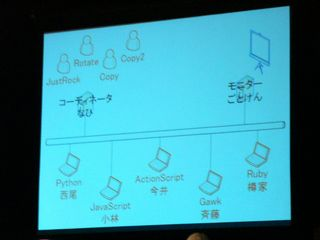 じゃんけんシステムの解説図。 プレゼンテータは、なひさん。
 対戦者のみなさん、司会の後藤謙太郎さん、システム作者のなひさん。
対戦者のみなさん、司会の後藤謙太郎さん、システム作者のなひさん。
セッションの進行
このセッションの大まかな進行は下記のようなかんじでした。
- ルール解説
- 参戦エージェントと、コーディネータの紹介と開発裏話
- 戦況モニタ/ブラウザの話
- 対戦
- 結果発表
- 各エージェントの評価と作者の解説 (っていうか、言い訳？)
Python のじゃんけんエージェント開発話
Ruby びいきのお話を書きたいのですが、開発の話の紹介においては、Python が圧倒的でした。 まずはふつうに (順当に) 実装して動かしてみたらしいのですが、 そのあとで、なんと「ワンライナー化」という無謀な挑戦を行い、ついに成功させたお話を 軽妙かつハイレベルにプレゼンされました。場内は爆笑の連続でした。
結果として出来上がった、2000 文字弱の巨大なワンライナーのプロジェクションを観て、 場内はもう大爆笑。こ……ここまでするかね。
んでもって、そんなものを作ってしまったがゆえに、当日の変更や改良・チューンアップはおろか デバッグすら一切できないという、涙無くしては語れない結果になってしまったとさ。
写真を撮り損なったのが、かえすがえすも残念なり。
その他のじゃんけんエージェント開発話
Ruby
Ruby は、ネットワーク・プログラミング楽勝!とのことで、順調に開発できたようです。 対戦状況をリアルタイムに表示する、いわばエージェントサイドの対戦モニタも作っちゃったという、 高生産性を披露していました。
ActionScript
ActionScript は、コンソールアプリケーションを作ることができないため、 あくまでしかたなく GUI アプリケーションとして実装したそうです。 加えて、マイクで会場の音を拾ってそのレベルによってアルゴリズムを再選択するという、 技術的には cool だけど戦略的には ??? な機能も付いていました。 会場の音って、声援なのかブーイングなのかわかんないじゃんね。
awk
awk は、awk だってソケット・プログラミングできるんだぞ、という点を強調されていました。 でも、趣味で使うだけにしておいて、仕事で使うのはやめた方がいいそうです。 出す手を決めるアルゴリズムがとてもユニークでした。 日本語文字列から手を自動生成するのだとか。(すみません、よく理解できてなくて) そして、負けが込んでくると自動的に「自暴自棄モード」(でしたっけ？) という 乱数による決定アルゴリズムにシフトするという機能も持っていました。
JavaScript
JavaScript は、「勝てる」戦略アルゴリズムをきちんと実装して、万全の体制で臨んできたようです。
対戦結果
下記、対戦結果です。 各セル内の 3 つの数字は、上から順に、勝ち、あいこ、負けの数を表しています。
| Ruby | Python | JavaScript | ActionScript | gawk | JustRock | Rotate | Copy | Copy2 | TOTAL | |
| Ruby | 167 164 169 |
026 030 444 |
169 091 240 |
006 267 227 |
498 002 000 |
003 002 495 |
196 204 100 |
262 104 134 |
1327 0864 1809 |
|
| Python | 169 164 167 |
174 160 166 |
177 171 152 |
164 178 158 |
157 162 181 |
173 149 178 |
174 168 158 |
167 155 178 |
1355 1307 1338 |
|
| JavaScript | 444 030 026 |
166 160 174 |
220 128 152 |
220 135 145 |
482 008 010 |
447 027 026 |
458 016 026 |
430 036 034 |
2867 0540 0593 |
|
| ActionScript | 240 091 169 |
152 171 177 |
152 128 220 |
181 172 147 |
151 178 171 |
152 179 169 |
096 154 250 |
276 109 115 |
1400 1182 1418 |
|
| gawk | 227 267 006 |
158 178 164 |
145 135 220 |
147 172 181 |
141 185 174 |
160 167 173 |
243 036 221 |
095 272 133 |
1316 1412 1272 |
|
| JustRock | 000 002 498 |
181 162 157 |
010 008 482 |
171 178 151 |
174 185 141 |
0536 0535 1429 |
||||
| Rotate | 495 002 003 |
178 149 173 |
026 027 447 |
169 179 152 |
173 167 160 |
1041 0524 0935 |
||||
| Copy | 100 204 196 |
158 168 174 |
026 016 458 |
250 154 096 |
221 036 243 |
0755 0578 1167 |
||||
| Copy2 | 134 104 262 |
178 155 167 |
034 036 430 |
115 109 276 |
133 272 095 |
0594 0676 1230 |
この結果を、勝率で表してみましょう。
勝率とは、勝ち数 ÷ ( 勝ち数 + あいこ数 + 負け数 ) です。 よって、相手とほぼ互角の場合には、だいたい 33% 程度になる値です。
| Ruby | Python | JavaScript | ActionScript | gawk | JustRock | Rotate | Copy | Copy2 | TOTAL | |
| Ruby | 33.4% | 5.2% | 33.8% | 1.2% | 99.6% | 0.6% | 39.2% | 52.4% | 33.2% | |
| Python | 33.8% | 34.8% | 35.4% | 32.8% | 31.4% | 34.6% | 34.8% | 33.4% | 33.9% | |
| JavaScript | 88.8% | 33.2% | 44.0% | 44.0% | 96.4% | 89.4% | 91.6% | 86.0% | 71.7% | |
| ActionScript | 48.0% | 30.4% | 30.4% | 36.2% | 30.2% | 30.4% | 19.2% | 55.2% | 35.0% | |
| gawk | 45.4% | 31.6% | 29.0% | 29.4% | 28.2% | 32.0% | 48.6% | 19.0% | 32.9% | |
| JustRock | 0.0% | 36.2% | 2.0% | 34.2% | 34.8% | 21.4% | ||||
| Rotate | 99.0% | 35.6% | 5.2% | 33.8% | 34.6% | 41.6% | ||||
| Copy | 20.0% | 31.6% | 5.2% | 50.0% | 44.2% | 30.2% | ||||
| Copy2 | 26.8% | 35.6% | 68.0% | 23.0% | 26.6% | 23.8% |
下表は、各エージェントを勝ち数順に並べたものです。
| 勝ち | あいこ | 負け | 勝率 | ||
| 1 | JavaScript | 2867 | 540 | 593 | 71.7% |
| 2 | ActionScript | 1400 | 1182 | 1418 | 35.0% |
| 3 | Python | 1355 | 1307 | 1338 | 33.9% |
| 4 | Ruby | 1327 | 864 | 1809 | 33.2% |
| 5 | gawk | 1316 | 1412 | 1272 | 32.9% |
| 6 | Rotate | 1041 | 524 | 935 | 41.6% |
| 7 | Copy | 755 | 578 | 1167 | 30.2% |
| 8 | Copy2 | 594 | 676 | 1230 | 23.8% |
| 9 | JustRock | 536 | 535 | 1429 | 21.4% |
かませ犬同士は対戦していないので、勝ち数順ではフェアではありませんね。 かませ犬も公平に評価できるよう、勝率順に並べてみましょう。
| 勝ち | あいこ | 負け | 勝率 | ||
| 1 | JavaScript | 2867 | 540 | 593 | 71.7% |
| 2 | Rotate | 1041 | 524 | 935 | 41.6% |
| 3 | ActionScript | 1400 | 1182 | 1418 | 35.0% |
| 4 | Python | 1355 | 1307 | 1338 | 33.9% |
| 5 | Ruby | 1327 | 864 | 1809 | 33.2% |
| 6 | gawk | 1316 | 1412 | 1272 | 32.9% |
| 7 | Copy | 755 | 578 | 1167 | 30.2% |
| 8 | Copy2 | 594 | 676 | 1230 | 23.8% |
| 9 | JustRock | 536 | 535 | 1429 | 21.4% |
結果批評
JavaScript エージェントの圧勝でした。
かませ犬の Rotate が大健闘しているのが、おもしろいですね。
対戦結果の数値を読み解けば、いろいろとおもしろいことがわかります。 ここでは、根掘り葉掘り詮索することはいたしませんが、 好対照な Ruby, Python, JavaScript の結果を簡単に比較してみます。
Python は、出す手の決定を乱数に頼っているとのことで、結果もそれを反映していて、 どの相手ともほぼ互角にわたりあい、安定しています。
JavaScript は、出す手の決定に「勝てるアルゴリズム」を採用しているとのことで、 その結果を反映して、どの相手にも優勢にわたりあっています。 とりわけ、かませ犬エージェントに対しては圧倒的です。
Ruby は、相手による優劣の差が極めて激しい。 かませ犬に対しても、JustRock には圧勝しているのに Rotate にはボロ負けです。 どうやら、「勝つためのアルゴリズム」を採用してはいるものの、 それがうまくいかなかったり裏目に出たりしているようです。 実際、作者から「対戦直前にアルゴリズムをいじったのがまずかった」と 反省の弁がございました。 がんばれ Ruby! まけるな Ruby! いつの日かじゃんけん 3.0 が開催されるときには、 じゃんけん界の赤い彗星と畏怖される存在になってくれ。
各エージェントの開発コスト
各 LL エージェントの、時間的、費用的コストについての質疑応答がありました。
時間的には、各 LL とも、ほぼ数日。ただし、Ruby だけは 6〜8 時間で完成させたそうです。 すごいぞ Ruby の生産性。あ、でも、Python は要した 3 日の半分以上はワンライナー化に費やしたとか。
費用的には、各 LL とも、無料。\0。ただし、ActionScript だけは、6 万円かかったそうです。 これは、Eclipse の有償の ActionScript 開発環境プラグインの試用期限が過ぎてしまい、 ちゃんとお金を払ったからだそうです。随分と高価なプラグインですこと。
コーディネータと戦況モニタの開発
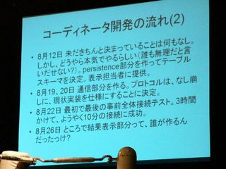
コーディネータは、なひさんが作成されました。 写真は、なひさんがコーディネータを解説されていたときのものです。 なひさんは、LL Saturday でのじゃんけんサーバ開発も手がけられていて、その経緯で今回も。 企画だけ立ち上がっていて中身がちっとも進まない状況で、かなりご苦労された模様です。
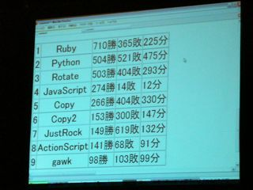
写真は、後藤謙太郎さんの PC で稼働中の戦況モニタです。
戦況モニタは、司会の後藤謙太郎さんが作成されました。 実は、イベントの前日までこの「戦況モニタ」は忘れ去られていたというか、 だれも考えが及んでいなかったとのこと。 戦況モニタは、対戦結果 DB を定期的に閲覧して画面を更新するシンプルな Web アプリですが、 直前の突貫工事できちんと本番稼働させるって、すごいですね。
私的総評
司会の後藤謙太郎さんは「まさに LL のアジリティを確認できた」と、 このセッションの結果を評していらっしゃいました。 まったくそのとおりだと思います。 個人的には、この企画/プロジェクトを実質的にドライブし、推進し、 プロトコルを策定し、コーディネータのプロトタイプを作成・配布し、 コーディネータの本番版を作成し、稼働させ、きっちりこのセッションを成功させた、 なひさんに深く感動しました。
対戦進行中、じゃんけんに関するトリビアの紹介などもあり、 じゃんけんの起源や世界のじゃんけん事情を知ることができました。 へぇ〜、世の中には「世界じゃんけん協会」なんてものがあるんですね。 勉強になったです。じゃんけん恐るべし。
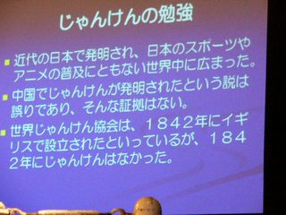 じゃんけんトリビアのひとこま。 プレゼンテータは、司会者の後藤謙太郎さんだったか、 アナウンサ席の法林さんだったか、失念してしまいました。 ごめんなさい。
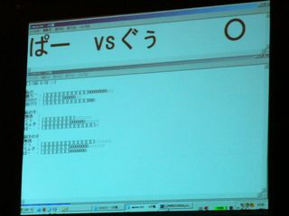 Ruby エージェントの作者である樽家さんの PC の、エージェント稼働中画面。 わかりやすい勝敗リアルタイムモニタは、Ruby だけ。
Ruby エージェントを作成された樽家昌也さん。


キミならどう書く
出題された要求仕様を満たすプログラムを、各 LL がフレームワークを使用して実装して、 その結果や開発過程や手法、技巧などを競うセッションです。 毎年恒例のセッションですが、去年まではプログラムの作成は個人 (独り) が行うものでした。 今年は、チームでプログラムを作ります。 今年のお題は、「家計簿」。費目をタグ付けできることが必須条件で、あとは自由。 今回参加した LL とフレームワークは、下記のとおりです。
| 言語 | フレームワーク |
| Python | Django |
| Gauche (Scheme) | Kahua |
| PHP | Ethna |
| Ruby | Ruby on Rails |
Python + Django
「家計簿」を「浪費チェックツール」という視点でとらえたプログラムを作成。
データベースには PostgreSQL を使用。
記述したコード量は 400 行程度。
工期は 20 時間程度で、そのうち 10 時間はグラフの作成のために費やしたとのこと。
Gauche + Kahua
「家計簿」をつけた経験がなく、最初は「家計簿ってなに？」状態だったとか。 加えて「タグ付け」も最初は理解していなかったのだとか。 (この点においては、この記事を書いている筆者も同様であります)
そんなわけで、最初は「Excel でいいんじゃないの？」などと思っていたのだけど 「タグ付け」を理解した段階で「Excel じゃ無理だね」って悟って、プログラムを作ったそうです。 プログラムを作りながら、フレームワーク Kahua のバグ修正も同時進行したそうです。 建設的ですね。
データベースにはフラットファイルを使用。PostgreSQL, MySQL なら簡単に代替可能だそうです。
記述したコード量は、Kahua の自動生成分も含めて 3200 行程度。
積極的に記述した量は 1100 行程度。
PHP + Ethna
フレームワーク Ethna の作者自身が参戦。 Ethna そのものをアップデートしながらプログラムを作成。こちらも建設的だ。
データベースには SQLServer を使用。
記述したコード量は、フレームワーク Ethna の分を含めて 5000 行程度。
積極的に記述した量は 100〜200 行程度!! 高生産性ですね。
作成に着手してから完成するまでの過程を時系列に解説するプレゼンがありました。 チームメイトにメールを読んでもらえなかったり、途中でやる気がなくなったり、 イベントの開催場所をなぜか渋谷と誤信していたりと、なかなか楽しいプレゼンでした。
Ruby + Ruby on Rails
データベースには SQLite3 を使用。ActiveRecord が対応している DB であれば、簡単に代替可能。
工期はなんと 6 時間!!! 超高生産性です。
積極的に記述したコードは 344 行で、そのうち 137 行がテストコードなので、実質 200 行程度とのこと。 これまたすごい。
Ruby チームは、かずひこさん、secondlife さん、鈴木美保さん、の 3 人チーム。 鈴木美保さんは、当該セッションの紅一点であり、 このイベントの発表者全体でも紅一点なので、場内から注目を集めていました。
かずひこさんは、本当は鈴木美保さんとのペアプログラミングするために参戦した？らしく、 secondlife さんはその出汁に使われたようです (冗談)。
今回 Ruby on Rails で家計簿を作るにあたってのコンセプトがいくつか紹介されました。
まず、元々は次の LL Gong に出場するつもりだったそうで、「どれだけ練習すれば、本当に『5 分でアプリを作れる』ようになるのか」の探求。 実際、当日会場に集合するまで一切コードを書かなかったとのこと。 当日会場だけで勝負。で、6 時間で完成させ、締め切り 30 分前には完成したとのこと。 5 分は無理としても、6 時間なら十分短いですよね。
次に、「テストファースト & レディ・ファースト」。 ちゃんとテストコードも書いていたチームは、Ruby だけでした。えらいね。 ひいき目かもしれませんが、プログラムの完成度も Ruby チームが一番だったように思います。 視覚的なデザインも素敵でした。この点には、鈴木美保さんの貢献が大だったと思います。2
また、特に、円グラフ表示時に、同時に『ドギャ〜ン』とか『ドドドドド』とかの擬音文字が表示され、 会場を大いに沸かせていました。これは secondlife さんの技かな？ 3
会場から「このプログラムを完成させて公開する意志はありますか」という問いがあり、 かずひこさんはそれに応えて「年末までにはひととおり自分用に完成させる意志はある」 「名前は、(Rails にちなんで) ブルー・トレインにしたい」とおっしゃっていました。
 Ruby チームの入場です。
Ruby チームの入場です。
LL Gong
各自が自慢の超絶技巧を 5 分という短時間の中でデモするという、特殊なライトニング・トーク・セッションです。 今回は 5 分という時限に加えて、3 人の審判員がリングのコーナーに座し、「×」カードを持って待機します。 そして、「このデモはつまらん」と判断した審判員は「×」カードを高く掲げ、 全員の審判員が「×」を挙げた場合にはその時点でデモ強制終了というきびしいルールです。
合計 8 つのデモがありました。 それぞれとても興味深かったのですが、ここでは、特に強烈に記憶に残っているもののみ抜粋して 要点を紹介させていただきます。
c-wrapper (Gauche)
c-wrapper は、Gauche から簡単に C 言語プログラムにアクセスして呼び出すためのラッパーです。 発表者の弁によれば、SWIG などよりも便利らしいです。
で、ふつうに C 言語の関数を呼び出してみるだけなら「あっそ」てなかんじて終わったのでしょうが、 実演がとてもとてもすごかった。 c-wrapper からネットワーク機能を利用してネット上の画像をダウンロードして加工してみる、というのが実演の題材でした。 ここで、c-wrapper から呼び出したのは、なんと libruby!! つまり、ネットワーク機能を使うのに、Ruby そのものを使っちゃえ、と。 そんでもって、さらに open-uri を require して (できるんですね、これがちゃんと!!) 他人のふんどし使いまくりの横着しまくりでネット画像をゲット。 このハチャメチャな超絶技巧に場内騒然でした。
真の Linux カーネル向けシェル (C 言語)
発表者から深遠なる問題提起がありました。
- 「csh で C 言語が使えないのは、これでよいのだろうか」
- 「ksh で、カーネル関数が呼び出せないのは、これでよいのだろうか」
で、”c”sh っていうからには、C 言語が使えなきゃオカシイだろって、RealCsh なるシェルを作っちゃったと。 実際には中でコンパイルとかいろいろやっているものの、ちゃんと C 言語が動くシェルが紹介されました。
で、”k”sh っていうからには、カーネル関数が呼び出せなきゃオカシイだろって、ReakKsh なるシェルを作っちゃったと。 これまたきちんとカーネル関数 (何だったか失念しました。ごめんなさい) をちゃんと呼び出せるシェルが紹介されました。
最後に発表者からの、「C 言語は LL なのか？ そう、C言語は Lowlevel Language なのだ」「ふつうのやつらの下を行け!!」 4 に、場内大爆笑でした。
世界の果てから漢字変換! Sumibi.org (Gauche)
Sumibi.org とは、Web サイト/Web サービスで、日本語入力環境が使えない PC において、 ローマ字→日本語変換をサービスを提供します。 このサーバサイドが Gauche で書かれているのだそうです。 具体的なシーンとして、「海外のネット・カフェで日本の友人に日本語メールを書く」という 状況を挙げて、使い方を実演されていました。
このサイトそのものの高い公益性に感銘を受けました。 単語変換だけではなく、文章の変換を行うこともできるようです。
それから、このサイトの変換エンジンは、Wikipedia を日々読み込んで解析することで、 着実に、自動的に賢くなっているのだそうです。 Wikipedia 上で有名になれば、変換結果候補の上位に登場できるのだそうですよ。
Plagger is a LL (Plagger)
Plagger とは……については、すみませんが Web で調べてくださいませ。 また、月刊誌 Software Design 2006/10 月号に、特別企画「Plagger3分Hacking 俺流Plagger活用術」が掲載されています。これをごらんになるのもよいでしょう。
発表者は、Plagger の多才ぶり、多機能ぶりを、 軽妙なトークとプレゼンで、会場を爆笑の渦に巻き込んでいました。
わたしが感銘を覚えたのは、プレゼンの上手さでした。 プレゼンの枚数はなんと 70 枚!! あきらかに高橋会長への挑戦でありますなぁ。 部分的には高橋メソッドっぽかったものの、高橋メソッドそのものではなく、 さまざまなエフェクトが巧妙に織り込まれていました。 Perl Mongers の底力を見せつけられた思いでした。
高橋審判員からの批評
3 人の審判員のうちのひとりは、高橋会長＠日本 Ruby の会でした。 司会から総評を求められた会長は、下記のような感想を述べられていました。
「プレゼンにソースコードを使う (映す) のは、やっぱり文字が小さくて読みにくいですね」
(Plagger の 70 枚のプレゼンに対して)「80 枚に挑戦したいと思います」
……と、メソッド指向の感想。
プレゼンの内容を、厳しく、暖かく見守る高橋審判員。
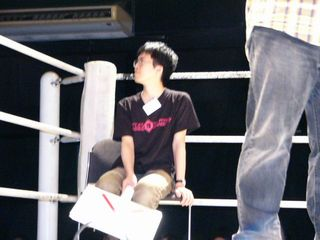

おわりに
演出の妙
今回の LL Ring は、「闘技場」という場所柄に合わせたコンセプトが随所に徹底されており、 観覧者の視点からの楽しさだけではなく、イベントスタッフのパワーをも感じることができました。 進行、アナウンス、照明、音響/音楽などの AV 効果、などなど、すばらしかったです。
とりわけ、クロージングにて映写されたエンディングロールには、 当日の諸々のイベントを撮影した映像が使われ、その場で今日一日を回想できるという カッコイイはからいに感動しました。 (う〜ん、これを作った裏方さんもすばらしい)
高橋メソッドの浸透具合
高橋メソッドそのもの、高橋メソッドっぽいもの、けっこう多かったです。 着実に浸透しているなぁと実感しました。 一方で、やはり高橋会長の高橋メソッドのプレゼンには一日の長があるようにも思えます。 とりわけ、著書「でかいプレゼン」の中で言及されていた「品格」について。 具体的には、改行位置、単語の選択の練度、フォントなど。 わたしも自前でモリサワフォントを買おうかと真剣に考えております。
Ruby とその他の言語の趨勢
今回の LL Ring において、Ruby は若干影が薄かったような気がしました。 気のせいでしょうか。 もちろん、キミならどう書く の RoR 家計簿のように他を圧倒するような場面もありましたが、 反面、話題性という点では、RoR 抜きの Ruby は不利なのかなぁなんて考えてしまいました。 たとえば、ラストのセッション LL Gong において、Ruby のスピーチは皆無だったのが残念でした。
今回は、関数型言語が優勢でした。 それ用のセッションもありましたしね。 関数型言語プチバブルっぽいご時世を反映してのことかもしれません。 とりわけ、今回は Gauche ががんばっていました。
最後に
いろいろと勝手なことを書きましたが、すべて私見ですので、ご容赦ください。
LL* はさまざまな LL の存在を知り、動向を観察できる絶好のイベントであります。本当にありがたい。 はやくも来年が楽しみです。
そして、がんばろう Ruby! 応援しよう Ruby!